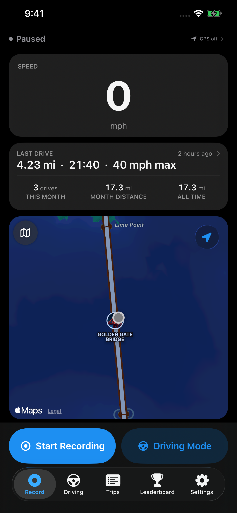

Keep the route.
Record GPS routes, distance and time. Start and stop manually for free.
YOUR PERSONAL DRIVE JOURNAL
Save the route. Name the journey. Find that favorite drive again, with RoadBook for iPhone.
Get RoadBook for iPhoneStart free with manual recording. Optional Pro subscription.

Record GPS routes, distance and time. Start and stop manually for free.
Name a drive, add notes and keep up to three photos with it for free.
Browse your saved drives. With Pro, explore detailed charts and see your drives together on a Route map.
A save can show a video. An unavailable ad does not prevent saving.
See your local price, billing period and trial eligibility in the app before subscribing.
No RoadBook account is required to start recording. Drive files stay on your device or in your own iCloud unless you choose to share them. Public leaderboards and road reports are optional. Location permissions and system conditions affect recording; iCloud availability affects sync.
Start your drive journal